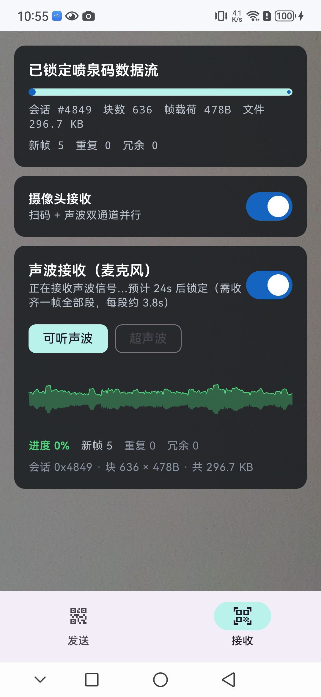
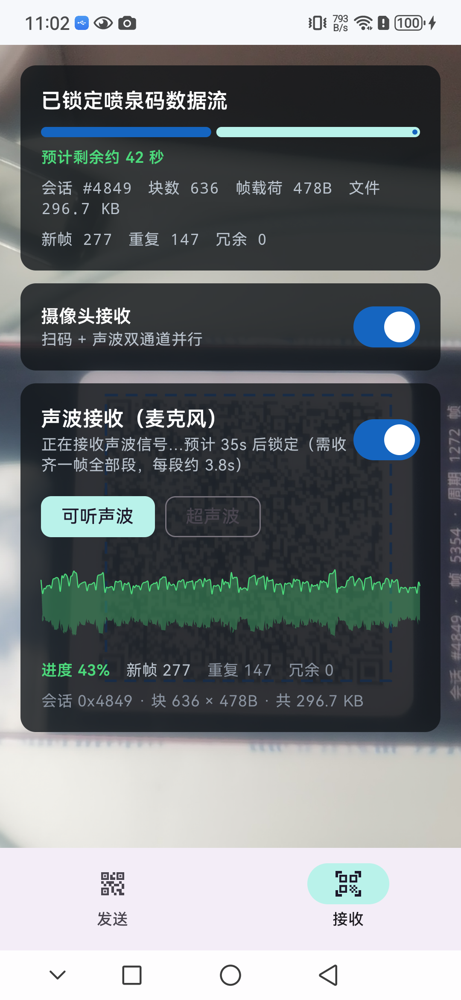

接收页：声波倒计时、频谱包络与进度详情实时刷新

蓝色虚线锁定框：仿射贴合，跟随二维码旋转与透视
分层模型：信道 → 调制 → 帧级编码
| 光信道（屏幕 → 摄像头） | 声波信道（扬声器 → 麦克风） | |
|---|---|---|
| 调制方式 | 二维码 10–30 fps 逐帧刷新 | 多频 FSK（16 音调选 1） |
| 帧内纠错 | QR Reed-Solomon（ECC-L） | RS(64, 24)，每段纠 12 字节 |
| 帧级编码 | LT 喷泉码（两信道共用同一解码器） | |
三级集成解码链（屏幕拍摄强鲁棒）
快路径
全帧 Hybrid / 全局直方图
→
定位裁剪
半分辨率定位 + 外扩 25%
→
Sauvola 兜底
局部自适应阈值抗眩光
接收即保存
SHA-256 校验通过自动存入 Download/AirFountainZulu/；可关摄像头改纯声波接收，隔墙也能传。